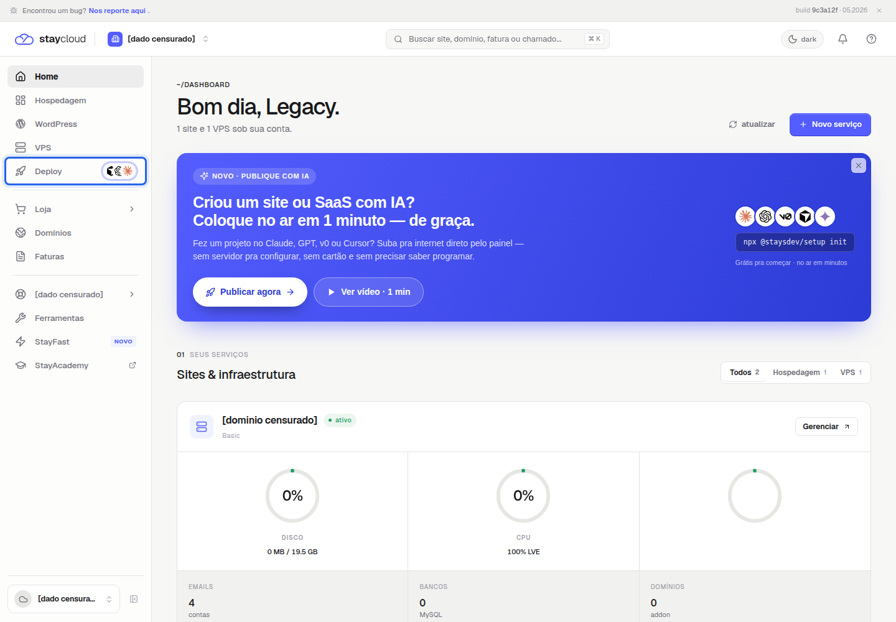

Como ativar o Deploy no Painel Novo da StayCloud em 4 passos
Ativar Deploy StayCloud pelo Painel Novo começa pela área Cloud. Ela foi criada para ajudar você a colocar no ar sites, páginas ou aplicações sem precisar configurar um servidor manualmente. Neste tutorial, você vai aprender como localizar o Deploy, conferir o status da sua conta e identificar o botão usado para iniciar a ativação.
Antes de continuar, leia o fluxo com atenção: nesta validação, o produto estava visível, mas ainda não estava ativo. Por segurança, o clique final em Começar grátis não foi executado, pois ele pode iniciar a ativação do recurso.
O que é o Deploy StayCloud
No Painel Novo, o Deploy é exibido no menu lateral com o nome Deploy. Ao abrir essa área, o painel mostra a tela Cloud, com a descrição deploy de git. A interface indica que o Cloud pode receber projetos vindos do GitHub, de um arquivo .zip, de um projeto iniciado do zero ou de um comando no terminal.
A tela também mostra recursos de acompanhamento, como Deployments, Logs, Domínios, Integrações e Plano. Esses itens indicam uma jornada própria, diferente de publicar arquivos pelo cPanel pelo Painel Novo ou de acessar ferramentas de VPS.
Antes de ativar o Deploy StayCloud
Antes de iniciar a ativação, confirme se você está na conta correta e se entende o que será feito. A tela validada exibiu o status cloud ainda não ativo, o botão Começar grátis e o botão Falar com vendas. Também apareceu a observação de que, em contas com equipe, o titular pode liberar a permissão Cloud para subusuários.
Não clique em ativar se você estiver em uma conta de cliente, em um ambiente de produção ou sem autorização do titular. Também revise projetos privados antes de usar comandos ou repositórios.
Como ativar Deploy StayCloud pelo Painel Novo
1. Abra a área Deploy
Acesse o Painel Novo da StayCloud e localize o menu lateral. Clique em Deploy. Esse menu fica junto das áreas principais do painel, como Hospedagem, WordPress, VPS, Loja, Domínios e Faturas.

2. Confira se a tela Cloud abriu
Depois de abrir o menu, confirme se o painel mostra a área Cloud. No topo da tela, a rota validada apareceu como ~/cloud.
3. Confira o status do Cloud
Na conta validada, o status exibido foi cloud ainda não ativo. Esse status indica que o recurso ainda precisa ser iniciado antes de publicar um projeto.
4. Inicie a ativação pelo botão Começar grátis
Com o status conferido, o botão principal disponível é Começar grátis. Esse é o botão usado para iniciar a ativação do Cloud. Nesta produção, o fluxo parou antes do clique final, porque a ação pode criar recurso, ativar serviço ou iniciar uma configuração de conta.
O que fazer depois da ativação
Após a ativação ser autorizada e concluída, o próximo passo natural é publicar um projeto de teste. A própria tela indica caminhos como trazer um projeto do GitHub, enviar um arquivo .zip ou usar o comando npx @staysdev/setup init. Como esses fluxos ainda precisam de validação individual, eles devem ser tratados em tutoriais separados.
Erros comuns
O erro mais comum é confundir Deploy com publicação via cPanel. O Deploy/Cloud é uma área própria do Painel Novo e não deve ser documentado como upload de arquivos em public_html. Se a tela mostrar cloud ainda não ativo, trate o ambiente como pendente. Para acompanhar recursos de hospedagem tradicional, veja também como consultar disco, CPU e RAM no Painel Novo.
Também evite clicar em Começar grátis sem saber se a conta permite ativação. Mesmo que o botão use a palavra grátis, a decisão deve considerar plano, permissão do titular e impacto do recurso. Em contas com equipe, confirme se o usuário atual tem permissão para gerenciar o Deploy StayCloud.
Dúvidas frequentes
O Deploy é a mesma coisa que cPanel?
Não. O cPanel é usado para gerenciar hospedagem tradicional, arquivos, e-mails, banco de dados e outros recursos. O Deploy aparece como Cloud no Painel Novo e tem um fluxo voltado a publicar projetos.
Preciso usar GitHub?
A interface cita GitHub como uma das opções, mas também menciona envio de .zip, projeto do zero e comando no terminal. O fluxo exato de cada opção precisa ser validado antes de uso em produção.
Posso clicar em Começar grátis em qualquer conta?
Não faça isso sem autorização. O botão inicia a ativação do Cloud e pode alterar o estado da conta. Em caso de dúvida, confirme com o titular ou fale com o suporte da StayCloud.
Conclusão
Agora você sabe onde localizar o Deploy, como confirmar que está na tela Cloud e qual botão inicia a ativação. Para ativar Deploy StayCloud com segurança, confira o status cloud ainda não ativo, revise se está na conta correta e só avance em Começar grátis quando houver autorização para iniciar o recurso.